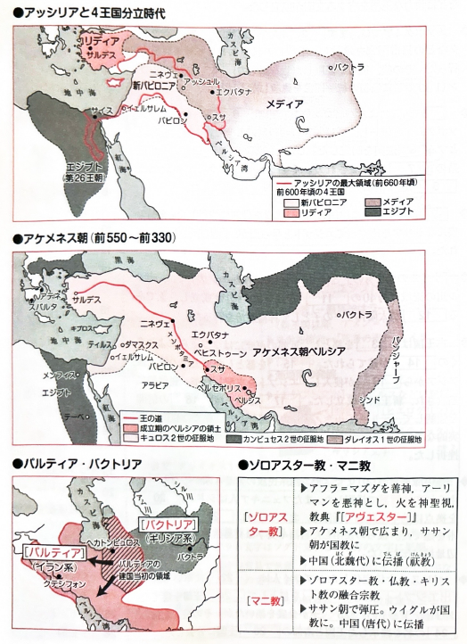

3.古代オリエント世界の統一

北メソポタミアに建国したセム語系のアッシリアは、イスラエル王国などを次々と滅ぼし、前７世紀にオリエントの統一に初めて成功して、アッシュル＝バニパル王が最大版図を実現した。前８世紀以降、都をニネヴェに置き、全国を州に分け、各州に総督を派遣した。しかし、強制移住などの過酷な支配を行ったために各地で反乱が起こり、滅亡した。
アッシリアの滅亡後、オリエントにはメディア、リディア、新バビロニア、エジプトの４王国が分立した。このうち新バビロニアはユダ王国を滅ぼし、住民を都のバビロンに連行するバビロン捕囚を行った。
インド＝ヨーロッパ語系のイラン人（ペルシア人）は前６世紀中頃にアケメネス朝を建国し、４王国を相次いで滅ぼしてオリエントを再び統一した。建国者のキュロス２世は新バビロニアを滅ぼした際にヘブライ人を解放し、彼らはパレスチナへの帰国を果たして、ヤハウェ（ヤーヴェ）を唯一神とするユダヤ教を成立させた。
アケメネス朝は第３代のダレイオス１世の時に全盛期を迎え、全国を約２０の州に分け、各州にサトラップとよばれる知事を配置して、「王の目」「王の耳」とよばれた監督官を巡察させた。また駅伝制をきき、「王の道」に代表される国道を整備するなど中央集権的な支配を進め、新たな都としてペルセポリスを建設した。その支配は服属民の自治を認めるなど寛容的だった。
アケメネス朝がアレクサンドロス大王の東方遠征で滅亡した後、オリエントにはヘレニズム諸国が成立した。その一つセレウコス朝シリアから前３世紀中頃に自立したイラン系のパルティアは東西交通路を掌握して繁栄した。パルティアは建国者のアルサケスに由来して、中国では安息と呼ばれた。
３世紀前半、ローマとの抗争で衰退したパルティアは同じイラン系のアルダシール１世の建てたササン朝により滅ぼされた。第２代のシャープール１世はローマ帝国の軍人皇帝ウァレリアヌスを捕らえ、また東方のクシャーナ朝を破った。
６世紀半ばのホスロー１世はビザンツ皇帝のユスティニアヌスと争い、また中央アジアの騎馬遊牧民エフタルを突厥と結んで滅ぼし、ササン朝の全盛期を築いた。しかし７世紀にアラビア半島から進出したイスラーム勢力にニハーヴァンドの戦いで敗れて、後に滅亡した。